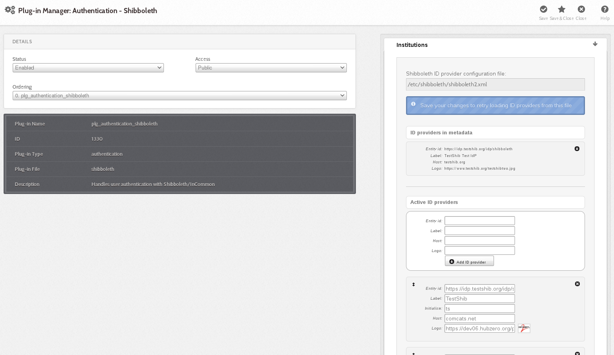

Installation
Shibboleth authentication
Shibboleth Authentication is an unsupported feature of HUBzero. This documentation has not been verified against HUBzero 2.2 or RedHat. It is included here for completeness. Please send any corrections or feedback to support@hubzero.org
Installation
# apt-get install hubzero-shibboleth
# yum install hubzero-shibboleth
If you installed the hubzero-shibboleth package on Debian, you're set. The relevant packages were included as dependencies. The packages are:
shibboleth2-sp-utils shibboleth2-sp-schemas libapache2-mod-shib2
At the time of this writing, Shibboleth is not distributed in the core repositories for Redhat/CentOS. You can read about how to add a repo that has what you need here:
https://wiki.shibboleth.net/confluence/display/SHIB2/NativeSPLinuxRPMInstall
Generate a private key
Use shib-keygen to generate /etc/shibboleth/sp-key.pem. Note that this utility may not be on your path unless you are root.
Configure Shibboleth
Shibboleth official quickstart documentation reference
The main configuration file is located at /etc/shibboleth/shibboleth2.xml. There are some other files that might be of interest to you here, but the defaults are acceptable to get your hub working with InCommon.
In shibboleth2.xml:
- Update
<ApplicationDefaults entityID="{url}" ...>so{url}ishttps://{your hostname}/Shibboleth.sso. This is your Shibboleth endpoint, designated later by the Apache configuration as the location where the shib2 module will manage communication with ID providers. - Update
<Sessions ...handlerSSL="false" ...>tohandlerSSL="true", if it is not already
Configure Apache
Shibboleth official Apache configuration reference
Ensure that Apache is loading the module. Typically this means that there is a link in mods-enabled to shib2.load in mods-available
ln -s /etc/apache2/mods-available/shib2.load /etc/apache2/mods-enabled
If you do not have this directory structure you can also enable the module directly in the next step by adding this to your Apache configuration file:
LoadModule mod_shib /usr/lib/apache2/modules/mod_shib2.so
In the conf file defining your SSL host, (usually located in /etc/apache2/sites-enabled):
- If not already set in the SSL
<VirtualHost>UseCanonicalName on; - To enable shibd's endpoint, add:
<Location /Shibboleth.sso> SetHandler shib </Location> - HUBzero CMS routing will stomp on /Shibboleth.sso unless you change the mod_rewrite rules a bit.
- You should have a line like:
RewriteRule (.*) index.phpprobably preceded by a few 'RewriteCond's. Add a new condition to exempt the shib2-controlled path:RewriteCond %{REQUEST_URI} !/Shibboleth.sso/.*$ [NC]
- You should have a line like:
Restart apache: /etc/init.d/apache2 restart
Verify
From the same host (this is IP-restricted):
wget -q --no-check-certificate https://localhost/Shibboleth.sso/Metadata -O - | tee /etc/shibboleth/sp-metadata.xml
This command should write XML to the listed file (and stdout) wrapped in <md:EntityDescriptor xmlns:md="urn:oasis:names:tc:SAML:2.0:metadata" ...>
If it does not, review the references above to troubleshoot.
You may skip to "Configuring HUBzero CMS!" if you do not want to test interop more thoroughly with the TestShib ID provider, but I would recommend you do this test.
Upload metadata to TestShib.org
- Copy the metadata generated above to some unique name, for example:
cp /etc/shibboleth/sp-metadata ~/{your hostname}-sp-metadata.xml
- Upload that file here: https://www.testshib.org/register.html. Uploading a file of the same name will overwrite it on the testshib server, should you need to make any adjustments.
Change your local configuration to accept TestShib as an ID provider
- Visit this URL to get an appropriate test configuration XML file:
https://www.testshib.org/cgi-bin/sp2config.cgi?dist=Others&hostname={your hostname from the Shibboleth Configuration step above})
- Assuming that looks OK, copy the output over your existing /etc/shibboleth/shibboleth2.xml:
wget -q --no-check-certificate "https://www.testshib.org/cgi-bin/sp2config.cgi?dist=Others&hostname={your hostname}" -O /etc/shibboleth/shibboleth2.xml
Restart services: /etc/init.d/shibd restart && /etc/init.d/apache2 restart
Configuring HUBzero CMS
If you do not already have plg_authentication_shibboleth installed, this package installs a tarball in $(PREFIX)/usr/lib/hubzero that you may install using HUBzero CMS's package management interface at /administrator.
Manage ID providers on HUBzero CMS's admin page
In Extensions->Plugins, select Authentication - Shibboleth

Ideally it should look a lot like the screenshot in that it found testshib in your XML configuration. If so, you can click the down arrow by that entry to move it into your active provider list.
This may fail if, for example, shibboleth2.xml is not readable by the web user, or if you changed your configuration so that the file is located somewhere unexpected.
It is not necessary, however, for the web server to read this file. If you'd like you can simply enter the EntityID for testshib (https://idp.testshib.org/idp/shibboleth) in the white box with the button labeled "Add ID provider". Enter something, eg "TestShib" for the label.
Quick run-down of the fields here:
- Entity id: (required) corresponds to the corresponding entityId in shibboleth2.xml and must match exactly for things to work out.
- Label: (required) name to show on the log-in button of your hub for this provider
- Initialism: (optional) if you have more than ten supported ID providers, the log-in list becomes searchable, and in this case you can add a short name for institutions so that they will come up when the user types that as well as when they type a portion of the label. (For example, if you federated with the National Science Foundation you might add "NSF" here)
- Host: (optional) institutions may be pre-selected if the IP address of the user looks like it is in a particular network, eg, to follow the previous example, nsf.gov to pre-select the National Science Foundation
- Logo: (optional) also shown on the button. Enter a URL here to make a iconified copy of it. You may have better results in some cases if you resize to no more than 28px in either extent yourself.
Finally, you can select the order in which you would like the button to appear on the login page here. When you're done, click "Save & Close" in the top right. This will take you back to the screen where you can click the icon in the "Status" column to enable the plug-in.
Try logging in!
(If you run into any problems here, there might be a clue in TestShib's logs of its ID provider actions)
Since TestShib doesn't release any attributes, you'll have to enter a name when you log in. Hopefully you can negotiate to get names and emails released to your hub with "real" ID providers, which you're now clear to do if everything worked out.
Help?
- If you have a problem that you can't resolve that appears to be related to Shibboleth's machinery, please consult the official documentation carefully.
- If you can't resolve the problem, there is a mailing list: https://www.shibboleth.net/community/lists/
- If the problem you are experiencing appears to be related not to the Shibboleth interchange mechanism but to something in the hub's implementation of the log-in procedure, visit https://help.hubzero.org/support to enter a support ticket describing the situation.
- Test that you can access https://idp.purdue.edu/idp/shibboleth or similar directly.